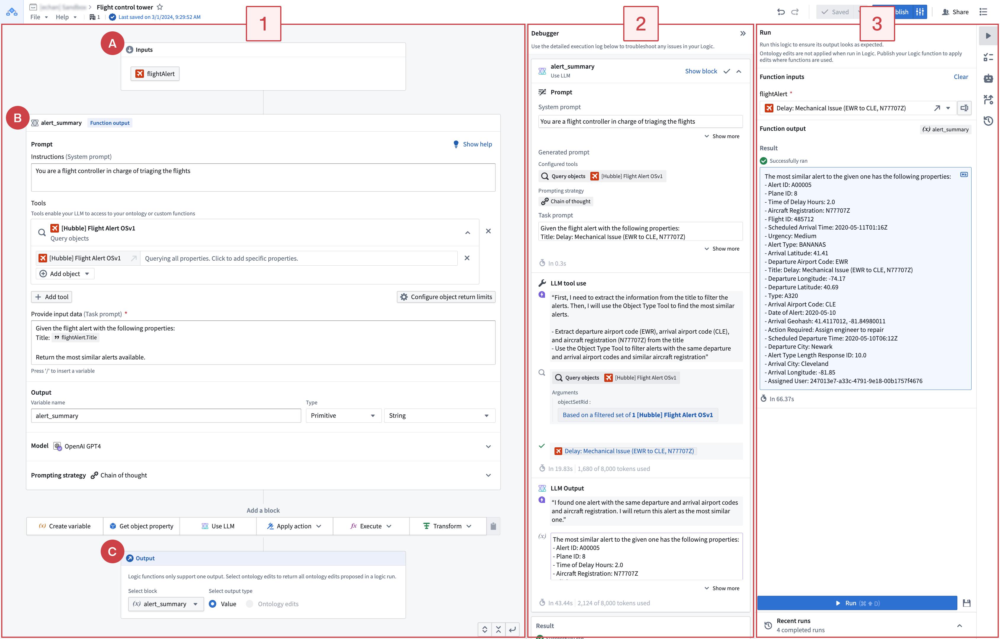
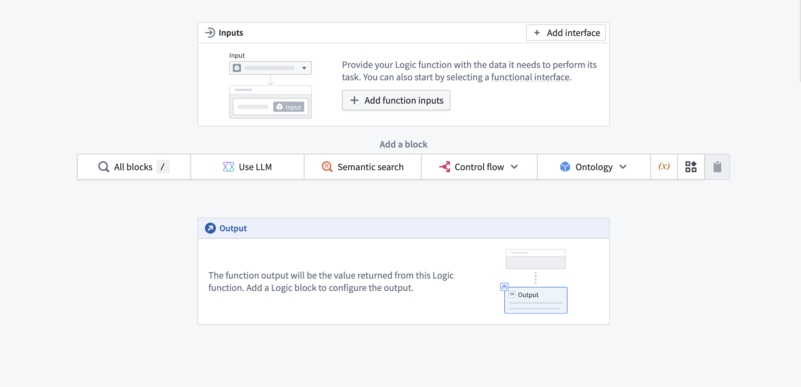
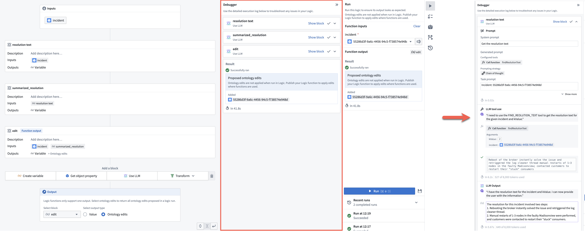
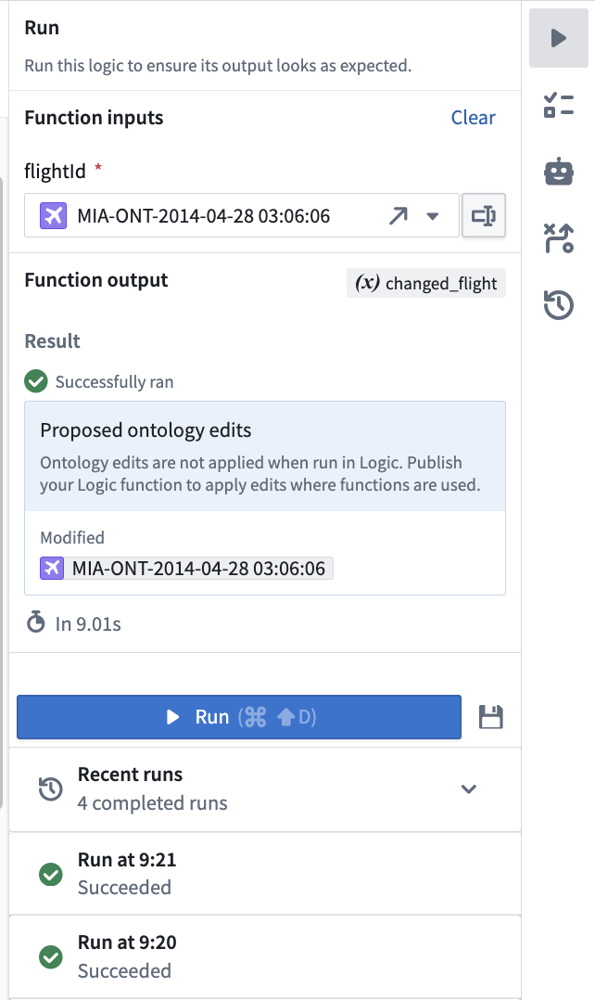
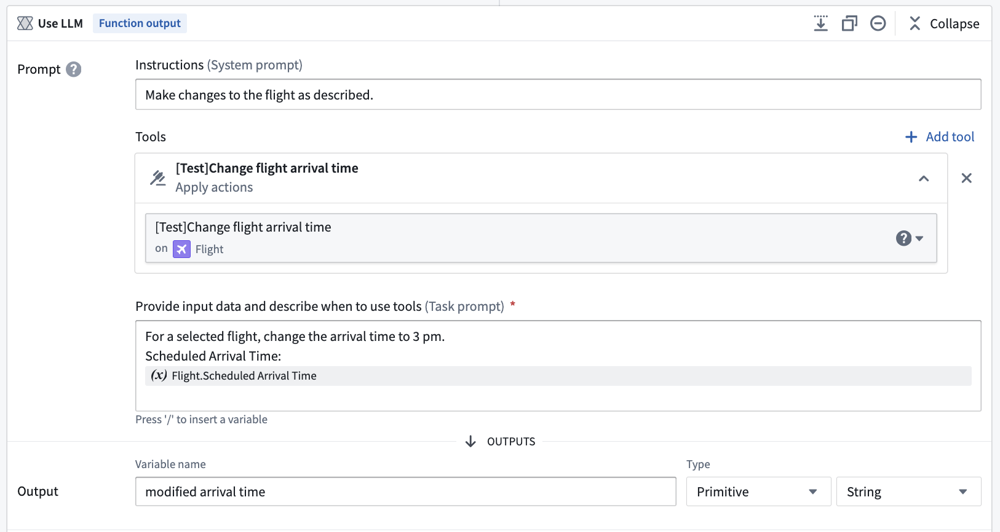
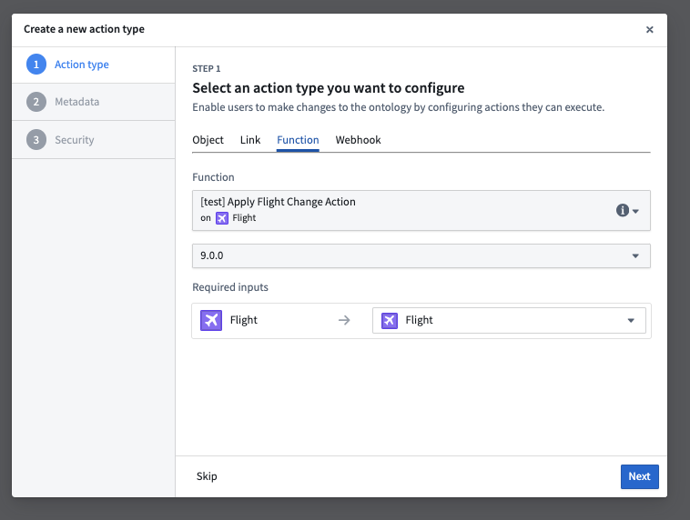

This guide demonstrates how to access AIP Logic, introduces the AIP Logic interface, and describes how to set up a basic Logic function by composing LLM blocks and examining the LLMâs chain of thought (CoT) in the Debugger.
AIP Logic can be accessed from the platformâs workspace navigation bar or by using the quick search shortcuts CMD + J (macOS) or CTRL + J (Windows). Alternatively, you can create a new Logic function from your Files by selecting +New and then selecting AIP Logic, as shown below.
After opening AIP Logic, you can create a new Logic file. Note that Logic files must be saved in a project folder, not in your home folder.
There are three main components of AIP Logicâs interface, numbered left-to-right in the notional screenshot below:

A typical AIP Logic workflow starts with configuring the input (A), blocks (B), and outputs (C) in the left panel (1). Use the Run panel (3) to generate a sample output. After Logic runs, the Debugger (2) displays the chain-of-thought (CoT) prompting and steps used by the LLM to produce the output. Use the Debugger with the Run panel to visualize the final output. The Run panel also displays recent Logic runs and lets you create unit tests. The right sidebar provides integrations with Automate and AIP Evals.
When you first begin using AIP, you will see the Run panel on the right and three types of boards on the left: inputs, for optionally choosing an object and its properties, blocks for defining your Logic instructions, and outputs that represent the desired Logic function results. The output from one block can be fed into subsequent blocks.
The screenshot below shows the configuration area for inputs, blocks, and outputs with the Run panel collapsed.

AIP Logic takes a variety of inputs. In the Inputs block (labeled as "A" in the application interface guide), you can specify the input name and type. Supported inputs include array, boolean, date, double, float, integer, long, media reference, model, object, object list, object set, short, string, struct, and timestamp. To reference an input in a Use LLM block, see Prompts.
An AIP Logic function is composed of blocks (labeled as "B" in the application interface guide). Block types include create variable, apply action, execute function, use LLM, loops, and conditionals. A block's output can be used in subsequent blocks. For more information, see Blocks.
You can define an intermediary output for every Logic block. The last block in your Logic path is the output of Logic function, labeled as "C" in the application interface guide.
Block output: Intermediary outputs that are passed between blocks. The output of your block can either be a primitive or an object for use in subsequent blocks.
Logic function output: The output of the Logic function that you want to return. This can be either a Value (primitive or object) or all the Ontology edits that your function has made.
Once you have composed your Logic function, you can test the Logic function by selecting Run on the right side of the view. When the Logic has been run, Debugger will open to display the LLMâs chain-of-thought (CoT).

The debugger allows you to expand and collapse block cards, clear tool calls, and easily review generated prompts, making it easier to interpret the chain of thought.
From the Run panel, you can run and evaluate your Logic, as well as review recent runs. The right-hand sidebar lets you set unit tests, run automations, and view run history.

At the bottom of the Run panel, you can also select any of your recent runs to view their output and debug log.

:::callout{theme="neutral"} The visibility of execution logs depends on the Logic function's execution mode settings. In user-scoped mode, which is the default, you can only see your own execution logs. In project-scoped mode, logs are visible to everyone with project access. :::
Select the unit tests icon ( ) to save a version of your input for performance evaluation purposes.
) to save a version of your input for performance evaluation purposes.

To edit test case parameter names, types, and optionality, select Modify columns. Add parameters in the schema editor.
In Run history, select Add as test case to convert historical execution results into test cases for new or existing evaluation suites.
To generate an evaluation suite for your Logic function, open the Evals tab in the right sidebar and select Generate evals. AIP Evals creates test cases, configures evaluators, and sets up metrics based on your function. You can edit the generated test cases and evaluators to refine coverage and scoring. Learn more in AIP Evals: Getting started.
Logic functions can be used the same way you would use a regular function on objects (FoO) in the platform.


In the Uses tab you can copy a curl request to run the logic outside of Foundry in your terminal. Note this is not available for Logics that return ontology edits.

When running the function in Logic, you will see all the proposed Ontology edits in your scenario in the Debugger. These edits will not actually be executed. If you wish to apply your edits to the Ontology, either:
For a Logic function to be able to edit the Ontology, you must:

When you are done iterating on your Logic function, find and select the Publish option located next to save to publish the Logic function.
Next, create a new action backed by the Logic function you have just published.


Use Foundry branching to develop and test Logic functions in isolation. You can publish them for use in branch-aware applications such as Workshop and merge the changes through an approved proposal. For more information, see Branching AIP Logic.
In the version history tab you can compare two versions of a logic to see what changed between them. Specifically what blocks were edited, added, or removed.

If you have access to AIP Logic, we recommend that you begin experimenting with LLM blocks to interact with your Ontology and build out a use case of your own. You may find it helpful to review the documentation on Functions in the platform.